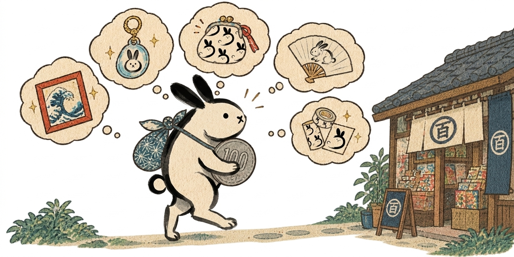
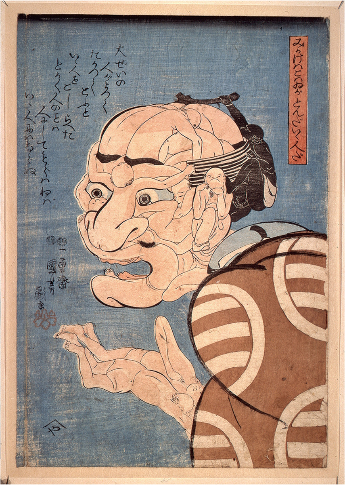
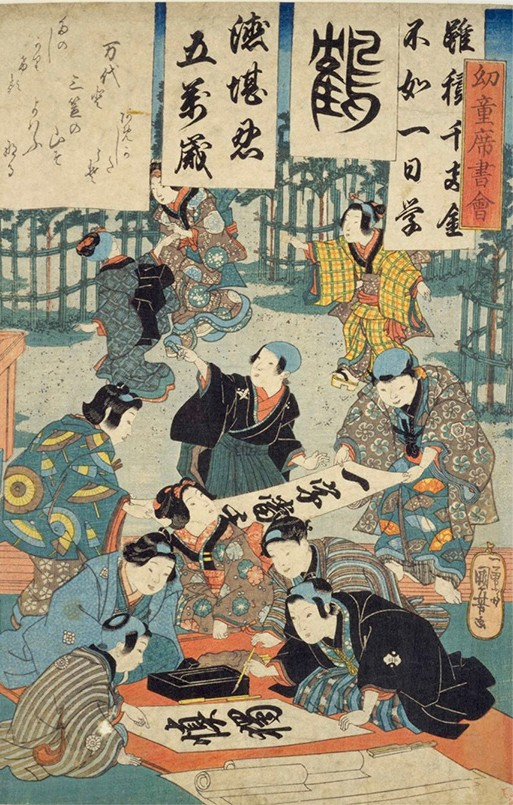
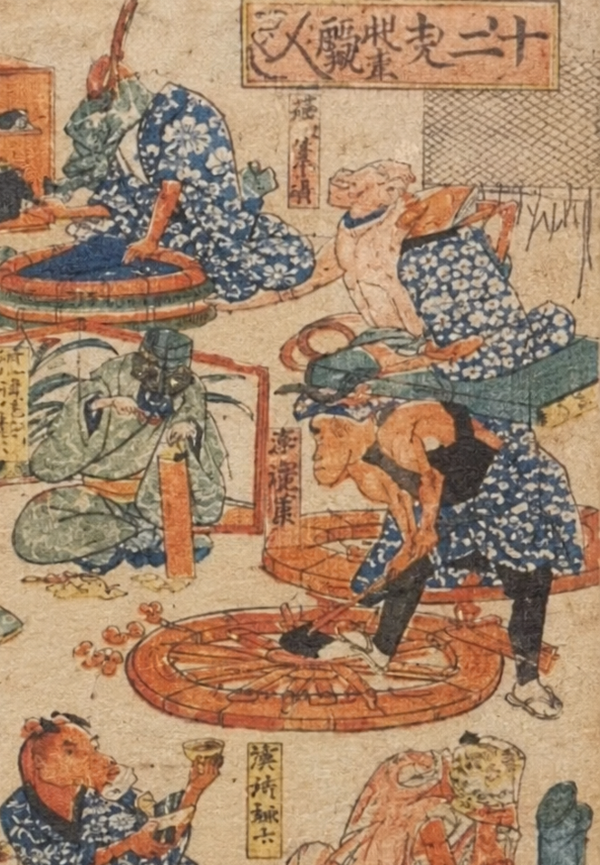

浮世絵と100均素材を組み合わせたプロジェクトのイメージ
なぜ「浮世絵 × 100均」なのか
浮世絵は、見事な構図や色使い、物語、そして江戸の暮らしの香りが漂う、現代の私たちにとっても心躍る芸術でございます。
しかし、「敷居が高そう」「難しそう」「古くさい」といった印象を持たれてしまうことも時折あるように思います。
そこで、誰もが気軽に手に取れる100円ショップの素材を入り口にして、浮世絵の世界をもっと身近に、軽やかなステップで楽しんでいただけるような、そんな素敵な形に仕立ててまいります。一緒に、浮世絵の世界にぴょんとひとっ飛びいたしましょう。
このサイトでできること
01
見る
100均素材から生まれた作品を楽しむ。

02
知る
浮世絵の歴史や作品の背景を知る。

03
作る
自分でも100均素材で挑戦する。

04
巡る
美術館やゆかりの場所へ出かける。
フルファネルで楽しむ
SNSで「面白そう」と感じてもらい、Webサイトで作品・制作・浮世絵の知識を深め、最後には「自分も作りたい」「実物を見たい」「この活動を追いかけたい」「浮世絵を後世に伝えていきたい」という行動につなげられたらと思います。